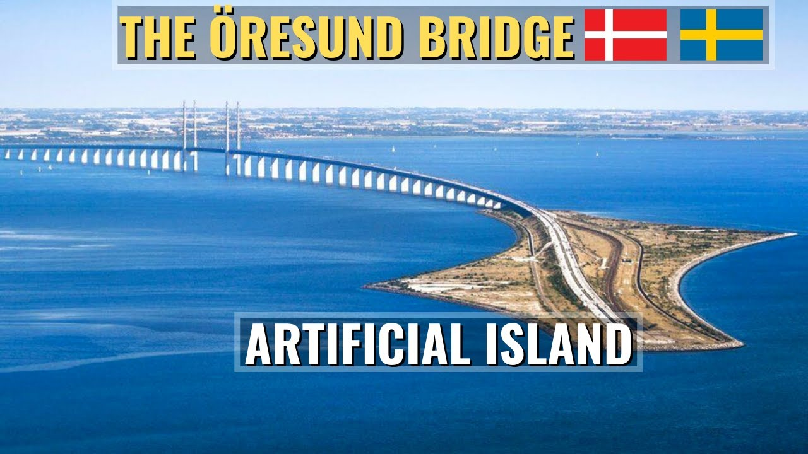
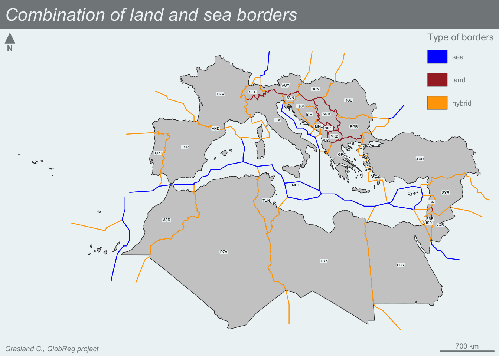

![]()
Loading required package: terraterra 1.7.46
Attaching package: 'terra'The following object is masked from 'package:cartography':
northUne des options possibles du projet Worldregio est de proposer des méthodes de régionalisation basées sur la division d’un réseau d’Etats en sous-réseaux (composantes) selon un double critère :
La définition d’un réseau géopolitique au niveau mondial implique la définition conjointe de deux listes d’objets :
Notez que États et frontières sont utilisés ici dans le sens abstrait de noeuds et sommets, ce qui signifie qu’ils ne correspondent pas nécessairement à l’idée que l’on se fait du sens commun.
La définition d’une liste finie d’états sera nécessairement compliquée car de nombreux territoires contestés dans le monde ne sont pas reconnus par tous les pays du monde et sont donc difficiles à définir en termes de géométrie et sont absents des bases de données où les attributs utilisés pour la régionalisation sont disponibles.
De nombreuses listes de pays - ou territoires à souveraineté partielle - sont disponibles dans les logiciels de cartographie open source (gadm, natural earth, …) mais avec des listes de pays différentes et aussi des géométries différentes !
En admettant que nous ayons réussi à définir une liste finie d’Etats, un autre problème va se poser concernant la géométrie des Etats qui n’est généralement pas limitée à un seul polygone mais peut généralement être définie comme un multipolygone qui peut inclure des morceaux de territoire très éloignés. Selon la liste des morceaux de territoire que l’on considère, le réseau de frontières sera différent et les résultats de la procédure de régionalisation peuvent être fortement modifiés.
Loading required package: terraterra 1.7.46
Attaching package: 'terra'The following object is masked from 'package:cartography':
northL’Allemagne est un cas simple d’État constitué d’un seul polygone (si l’on exclut certaines îles) et où l’on peut facilement proposer une liste d’autres États partageant une frontière terrestre commune : Danemark, Pays-Bas, Belgique, Luxembourg, France, Suisse, Autriche, République tchèque et Pologne. On peut bien sûr arguer que la liste des voisins a changé au cours de l’histoire du pays, mais si l’on considère la situation actuelle, il est relativement facile de dresser une liste.

Le cas du Danemark est un peu plus difficile, car nous devons décider si le Groenland et les îles Féroé doivent être inclus ou non dans le territoire de l’État danois. Il s’agit dans les deux cas de territoires autonomes plus ou moins éloignés de la zone métropolitaine, avec moins de population mais beaucoup plus de superficie dans le cas du Groenland. Si l’on considère uniquement les frontières terrestres, le Danemark n’a qu’un seul voisin (l’Allemagne) et les territoires éloignés ne modifient pas la topologie. Mais la situation sera différente si l’on considère les frontières maritimes avec des pays comme l’Islande, le Canada, etc.
Enfin, nous devrions également considérer le cas de la Suède qui est séparée du Danemark par la mer mais qui est directement reliée au Danemark par le célèbre pont d’öresund … Mais comme le pont est atteint par un tunnel, doit-on considérer que les deux pays sont toujours séparés par la mer ?

Comme dernier exemple de complexité maximale, nous pouvons considérer le cas de la France où nous avons un grand nombre de territoires rempotés avec une grande diversité de statuts politiques. Certains d’entre eux sont des départements et territoires d’outre mer (DROM) alors que d’autres ne sont que des territoires d’outre mer avec différents niveaux d’autonomie. Faut-il les inclure ou non dans la liste des territoires utilisés pour la construction de notre réseau ?
Contrairement au Danemark, ces territoires éloignés ne sont pas seulement des îles et, dans le cas du territoire de la Guyane française, nous avons une longue frontière terrestre avec le Brésil et la Guyane, qui est également une frontière de l’UE.
Nous utilisons ici la carte du monde proposée par le GADM à un faible niveau de résolution et adoptons une projection de Robinson afin d’avoir des distances approximativement en km.
Nous utilisons la fonction getBorders() du package cartography élaboré par Nicolas Lambert et Timothee Giraud, ingénieurs à l’UMS RIATE. Nous testons dans un premier temps l’algorithme sur un échantillon limité de 30 pays situés sur les rives nord et sud de la Méditerranée afin de vérifier la qualité des résultats et le temps de calcul sur 30 pays.
Time difference of 0.3747699 secsLes frontières terrestres ont été correctement extraites. L’Espagne n’est pas liée au Maroc car Ceuta et Melila ont été éliminés par le niveau de résolution spatiale.
The following argument is not relevant when using type = 'typo': col.

L’algorithme élaboré par N. Lambert et Timothée Giraud (UMS RIATE) est relativement complexe et utilise deux paramètres :
Si une unité n’a pas de terre dans la grille, elle ne sera pas utilisée pour l’analyse des frontières. C’est par exemple un problème dans le cas de Malte où le pays n’est pas pris en compte avec une résolution inférieure à 20km. Selon notre expérience, de bons résultats en un temps raisonnable peuvent être obtenus avec une distance maximale de 500 km et une grille de résolution de 20km.
Malte et Chypre ne sont plus isolées et sont reliées à leurs voisins par des frontières maritimes :
The following argument is not relevant when using type = 'typo': col.Un réseau géopolitique peut être élaboré en combinant les frontières terrestres et maritimes :


La distance entre deux Etats peut être mesurée de différentes manières. Nous pouvons utiliser ici le travail intéressant effectué par le CEPII pour l’analyse des flux commerciaux qui suggère comme solutions possibles :

Nous proposons d’élaborer un réseau complet de pays du monde sur la base de la carte simplifiée du GADM qui contient 231 unités géopolitiques (certaines d’entre elles appartenant au même État). Nous utilisons les frontières terrestres et maritimes comme critères pour la définition des arêtes. Le temps de calcul a été de 11 minutes pour les frontières maritimes avec les paramètres width= 370 km & res 20 km.

La centralité des pays dans ce réseau géopolitique dépend du nombre de frontières qu’ils partagent avec d’autres pays (Cf. Chine, Iran, Russie, …).
Mais certains pays ayant peu de liens peuvent jouer un rôle stratégique dans le réseau en termes d’interdépendance (cf. les États-Unis, le Canada, l’Islande qui relient l’Amérique à l’Europe et à l’Asie).

@online{grasland2024,
author = {Grasland, Claude},
title = {Réseaux Géopolitiques},
date = {2024-09-27},
url = {https://worldregio.github.io/en/posts/2024-09-27-geopolitical-networks/},
langid = {en}
}